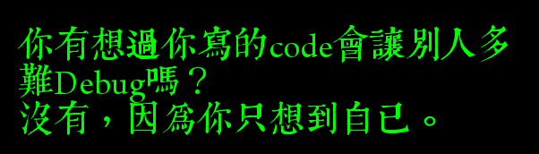

Introduction to Programming Language
Created by NTUgEEkWhich Programming Language?
Static/Dynamic Language
Static language: C++, JAVA ...
Needs a compiler to compile codes into executables.
Static/Dynamic Language
Dynamic language: python, javascript
Needs a interpreter.
Static/Dynamic Typed
Static: Type is determined in compile time.
Dynamic: Duck Typing.
當看到一隻鳥走起來像鴨子、游泳起來像鴨子、叫起來也像鴨子，那麼這隻鳥就可以被稱為鴨子。 From Wikipedia
Programming Languages
- C/C++: Kernel, hardware relative, applications, ..
- JAVA: Android.
- Python: Scientific programming, ...
- JS: Browser, server...
So, which language?
Best: 1 static language & 1 dynamic language.
At least you have to know how to write C++.
Time complexity
Asymptotically growth of the time needed to compute something.

If a computer could do 1G(\(10^9\)) operations per seconds.
| \(f(n)\) | \(n = 100 \) | \(n = 10^5\) |
| \(n\) | \( \lt 1\text{ms} \) | \(\lt 1\text{ms}\) |
| \(n \log n\) | \( \lt 1\text{ms} \) | \(1.6\text{ms}\) |
| \(n^2\) | \( \lt 1\text{ms} \) | \( 10\text{s}\) |
| \(2^n\) | BOOM | BOOM |
Numbers
- C++: int, long long, char, double...
- Python:
int, with nearly no upper bound.
float, which is a double. - JS: Numbers, always float(*).
(Static) Array
- C++:
int arr[30] - JAVA:
int [] arr(*) - Python: No.
- JS: No.
(Dynamic) List
List that could dynamicly changes length.
#include <vector>
vector<int> ls;
ls.push_back(1);
ls.push_back(3);
cout << ls[0] << endl; // 1
ls = [1, 'haha', 3.5]
ls.append(10)
print(ls[0]) # 1
Map
A data structure that store key-value pairs.usually runs in \( O(n) \) or \( O( \log n ) \) time.
map<string, int> mp;
mp["Someone"] = 123;
mp = {
'Someone': 123,
1.2 : [2, 3, 4],
}
Tuple
Fixed length list.
#include <utility>
#include <tuple> // C++11
pair<int, int> p = {1, 2};
tuple<int, string, double> z =
make_tuple(1, "2", 3.0);
pr = (1, 2)
tup = (1, "2", 3.0)
String
Can be think as a sequence of chars.
- C++:
char [],std::string - Python:
str - JS:
string
Common representation
- list:
[a, b, c, ... ] - map:
{a: b, c: d, ...} - tuple:
(a, b, c, ...) - string:
"abc..."or sometimes'abc...'
JSON
{
"name": "John",
"age": 20,
"friends": [
{
"name": "Bob",
"age" : 18
},
{
"name": "Alice",
"age" : 21
}
]
}
Flow controlls
Block
if (something) {
int a = ... ;
for (...) {
int b = ...;
}
}
if something :
a = ...
for ... :
b = ...
if (something) {
var a = ...;
for (...) {
var b = ...;
}
}
Conditions
if (a == b) {
}
switch (c) {
case 0:
puts("c = 0");
break;
case 1:
puts("c = 1");
break;
}
While loop
while (n--) {
}
do {
} while (n--);
For loop
Usually two kinds, normal-for and ranged-for
for (int i=0; i<n; i++) ;
vector<int> ls;
for (auto x: ls) ; //Only in c++11
# No normal for loop...
ls = [1, 2, 3];
for x in ls:
Functions
Callables.
int f(int a, double b) {
return a + b;
}
def f(a, b):
return a + b
function f(a, b) {
return a + b;
}
A closer look to C++'s variable.
How data is stored
& operator gets the address of a variable
cout << &a << endl;
Pointers
Store Address to other variable

Pointers
use *ptr to get the value (with same address)
where the pointer points at
int a = 10;
int *b = &a;
// Same as
int *b; b = &a;
cout << *b << endl; // 10
*b = 1;
cout << a << endl; // 1
Pointers operator
ptr + n points to the address after ptr
which depends on the size of the type.
int *a = 0x0;
cout << a+1 << endl; // 0x4
double *b = 0x0;
cout << b+1 << endl; // 0x8
Reference
Alias of a variable. Same address, value, just with different names!
int a = 10;
int &b = a;
cout << b << endl; // 10
b = 1;
cout << a << endl; // 1
Passing variable to function
Consider
int a = 1;
int b = f(a);
Should the function be able to change my value?
Pass by Value
The normal way.
void f(int a) {
a = 3;
}
...
int a = 1;
f(a);
cout << a << endl; // 1
Pass by Reference
But sometimes you want the function to be able to changes your data.
void f(int &a) {
a = 3;
}
...
int a = 1;
f(a);
cout << a << endl; // 3
Pass by Pointer
Actually, pass a pointer by value.
void f(int *b) {
*b = 3;
}
...
int a = 1;
f(&a);
cout << a << endl; // 3
Array revisited
So how static array is stored in c++?
It just a continuous block of variables.
The array variable store the first position of the array
int a[10] = {1, 2, 3};
// They are the same thing!
a[5] = 3;
*(a+5) = 3;
// And that's why c++ won't stop you to do
a[-1] = 3;
Functions are also pointers!
Really weird syntax.
int f(int a, double b);
int (*g)(int, double) = f;
Some additional feature in c++
Defines
Simply copy the code.
#define yes true
#define twice(a) (a*2)
bool reply;
int order = 3;
if (reply == yes) {
order = twice(order);
}
bool reply;
int order = 3;
if (reply == true) {
order = (order*2);
}
Enum
Which is more readable?
int f() {
if (not network) {
return 1;
} else if (...) {
return 2;
} else ...
typedef enum {
NETWORK_UNREACHABLE,
COMPUTER_ISNT_ON,
...
} ErrorType;
ErrorType f() {
if (not network) {
return NETWORK_UNREACHABLE;
} else if (...) {
return COMPUTER_ISNT_ON;
} else ...
Struct
Old C feature, pack variable together.
struct structA {
int b, c;
};
structA a = {1, 2};
cout << a.b << endl;
C++11 - auto
Auto type deduce
auto a = 10;
auto b = "haha";
vector<int> vl;
for (auto x: vl);
// x: vector<int>::iterator
Closer look at Dynamic typed language.
Variable
Is the variable value, reference, pointer in python, js?
Neither, a variable is just a label. Maybe we could think as a
changable reference.

Types
There are two kinds of types, mutable and immutable.
- Mutable are datas that could change, ex:
list, dict - Immutable are datas that couldn't change, ex:
str, int, tuple
Pass by label name
It only depends on whether the type is mutable/immutable.
def f(a, b):
a += b
a, b = 1, 2
f(a, b)
print(a) # 1
a, b = [1], [2]
f(a, b)
print(a) # [1, 2]
Object oriented programming
Why?
It's all about how to work together.
Why?
- Don't reinvent the wheel.
- Modulize.
Class
- Property: the data stored in the object
- Method: some function owned by the object
Class
class MyClass {
int a, b;
double c;
MyClass() {
a = b = 0;
c = 0.0;
}
int f(int d);
};
class MyClass:
def __init__(self):
self.a = self.b = 0
self.c = 0.0
def f(self, d):
return ...
class MyClass {
constructor() {
this.a = this.b = 0
this.c = 0.0
}
f(d) {
return ...
}
}
Instancelize
MyClass obj;
// or
MyClass *objPtr = new MyClass();
obj = MyClass()
obj = new MyClass()
Member access
MyClass obj;
cout << obj.a << obj.f() << endl;
MyClass *obj = new MyClass();
cout << obj->a << obj->f() << endl;
MyClass obj
print(obj.a, obj.f())
Member access permision
class MyClass {
private:
int a;
protected:
void f() {
}
public:
string b;
};
Python doesn't has this feature, JS partially supports.
Member access permision in c++
Rules:
- Public: Everyone knows.
- Protected: Only you and your derived class(children) knows.
- private: Only you knows.
Inheritance
class B : public A {
}
class C : protected B {
}
class B(A):
pass
class B extends A {
}
Inheritance
Basically, you will inherit every members which your parents have.
You can add more, and even, override some exists parent functions.
Overriding
class A {
public:
void f() {
cout << "好" << endl;
}
}
class B : public A {
public:
void f() {
cout << "慘" << endl;
}
}
B b;
b.f()
class A:
def f(self):
print('好')
class B(A):
def f(self):
print('慘')
b = B();
b.f()
Overriding - Good!
class Animal:
def __init__(self):
self.speed = "1m/s"
def move():
print("I don't know"
'how to move')
class Bird(Animal):
def move():
print('I fly in', self.speed)
class Fish(Animal):
def move():
print('I swim in', self.speed)
class Dog(Animal):
def move():
print('I walk in', self.speed)
animals = [Dog(), Fish(), Bird()]
for x in animals:
x.move()
# I walk in 1m/s
# I swim in 1m/s
# I fly in 1m/s
Well done!
But what about in c++? what is the type of the list animals?
Overriding in C++
class Animal {
string speed;
Animal() {
speed = "1m/s";
}
void move() {
cout << "I don't know "
"how to move" << endl;
}
}
class Bird : Animal {
void move() {
cout << "I fly in " <<
speed << endl;
}
}
class Fish : Animal {
void move() {
cout << "I swim in " <<
speed << endl;
}
}
class Dog : Animal {
void move() {
cout << "I walk in " <<
speed << endl;
}
}
vector<????> animals {
new Dog(), new Fish(), new Bird()
}
for (auto x: animals) {
x->move()
}
# I walk in 1m/s
# I swim in 1m/s
# I fly in 1m/s
Answer: vector<Animal*>, but...
Overriding in C++
vector<Animal*> animals {
new Dog(), new Fish(), new Bird()
}
for (auto x: animals) {
x->move()
}
# I don't know how to move
# I don't know how to move
# I don't know how to move
Because x->move point to the
function in class Animal
Solution: vtable, virtual function
Overriding in C++
class Animal {
string speed;
Animal() {
speed = "1m/s";
}
virtual void move() {
cout << "I don't know "
"how to move" << endl;
}
// Or if you don't want to implement now
virtual void move = 0;
}
Operator polymorphism
How compiler treats operators?
a + b - c;
// Actually (a.+(b)).-(c)
cout << 1 << "hi!";
// Actually (cout.<<(b)).<<(c)
// Notice that these are just an explanation,
// You will get compiles error with those codes.
Operator polymorphism
class Point {
Point operator + (Point a) {
return Point(x+a.x, y+a.y);
}
}
class Point:
def __add__(self, a):
return Point(self.x+a.x,
self.y+a.y)
JS: Sadly, didn't has this feature...
Network

Network
Each one has a unique IP.
- ipv4: 192.168.1.101
- ipv6: 08:62:66:c7:e2:79
Network commands
$ ip link
$ ip addr
$ ip rou
Setting comand: netctl
DNS
Convert human readable name (ex: ntuee.org) to ip (ex: 1.23.45.67)
config in /etc/resolv.conf).
Subnet
ipv4, not enough :( ...
Subnet example: 123.45.67.89/24).
Mask: 255.255.255.0).
DHCP
Dynamic Host Configuration Protocol
$ systemctl start dhcpcd
Port
Different type of application uses different port
Examples:
- 80: Browser
- 22: SSH
SSH
Really convenient command
# usage: ssh [username]@[hostname] -p [port]
# example
$ ssh bbsu@ptt.cc
How program run

CPU Instructions

Operating System
- Process management, tasking.
- Memory management
- System call
- ...
Programming cycle

Build, Makefile
CC=gcc
CFLAGS=-I.
DEPS = hellomake.h
.PHONY: main clean
%.o: %.c $(DEPS)
$(CC) -c -o $@ $< $(CFLAGS)
hellomake: hellomake.o hellofunc.o
gcc -o hellomake hellomake.o hellofunc.o -I.
Usually make and make install are provided
Debuging
- Printing
- Log
- Tools: gdb ...
Security
Bugs causes security issues
- Buffer overflow
- SQL injection
SELECT * FROM users WHERE (name = '" + userName + "') and (pw = '"+ passWord +"')
Programming with Other
Main issue: multiple programmer modifying different codes...
Version Control
- Dropbox?
- Subversion
- Git